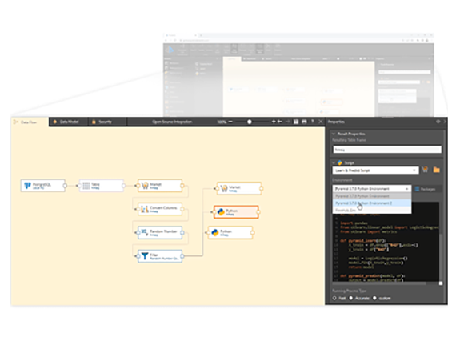
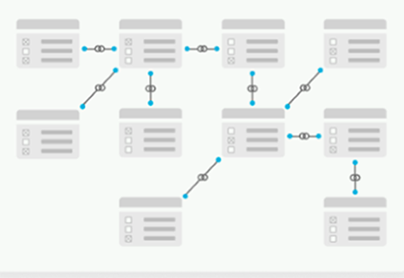
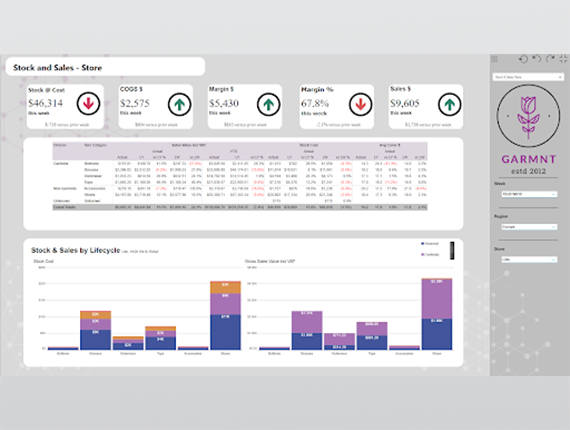
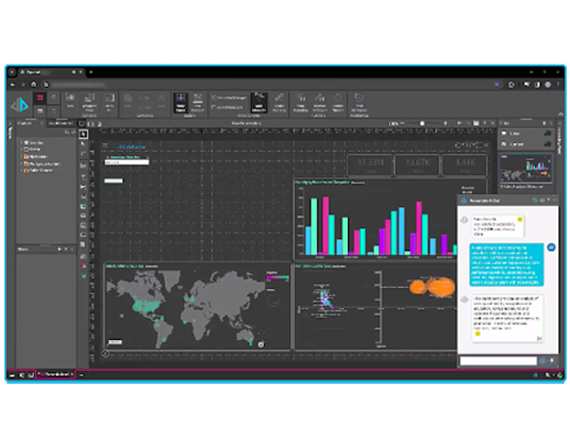

Verinin Gücünden Faydalanın: Pyramid Analytics İle İşinizde Daha Akıllı Adımlar Atın!
Pyramid ile kurumsal düzeyde veri yönetimi yapın, görselleştirin, raporlayın. Çeşitli veri kaynaklarından veri toplayın, veri modellemesi yapın.
Referanslar


Veri Toplama ve Entegrasyon
Kullanıcılar, çeşitli kaynaklardan veri toplama ve Pyramid Analytics platformuna entegre etme esnekliğine sahiptirler. Bu, ilişkisel veritabanları, veri ambarları,
...
Kullanıcılar, çeşitli kaynaklardan veri toplama ve Pyramid Analytics platformuna entegre etme esnekliğine sahiptirler. Bu, ilişkisel veritabanları, veri ambarları, bulut tabanlı veri depoları, Excel dosyaları ve diğer veri kaynaklarını içerir. Veri toplama ve entegrasyon aşaması, kullanıcıların veriye kolay erişimini sağlar
Veri Modelleme ve Hazırlık
Kullanıcılar, topladıkları verileri analiz için hazırlarlar. Bu süreç, veri temizleme, dönüştürme ve modelleme işlemlerini içerir. Pyramid Analytics'in veri modelleme
...
Kullanıcılar, topladıkları verileri analiz için hazırlarlar. Bu süreç, veri temizleme, dönüştürme ve modelleme işlemlerini içerir. Pyramid Analytics'in veri modelleme araçları ve işlevleri, kullanıcıların veriye yapısal bir bakış açısı kazanmalarını ve analiz için uygun hale getirmelerini sağlar.
Görselleştirme ve Raporlama
Kullanıcılar, verileri etkileşimli grafikler, tablolar, haritalar ve diğer görsel öğelerle görselleştirebilirler. Bu, analiz sonuçlarını anlamak için kullanıcılara yardımcı olur
...
Kullanıcılar, verileri etkileşimli grafikler, tablolar, haritalar ve diğer görsel öğelerle görselleştirebilirler. Bu, analiz sonuçlarını anlamak için kullanıcılara yardımcı olur ve verilerin kolayca anlaşılmasını sağlar. Ayrıca, kullanıcılar Pyramid Analytics'in raporlama araçlarını kullanarak özelleştirilmiş raporlar oluşturabilir ve paylaşabilirler. Bu adım, işletme içindeki paydaşlar arasında bilgi paylaşımını ve işbirliğini kolaylaştırır.
Analitik ve İş Zekası Uygulamaları
Pyramid Analytics, kullanıcıların verileri derinlemesine analiz etmelerini sağlar. Kullanıcılar, veriye dayalı tahminler yapabilir, trendleri tanımlayabilir ve işletme
...
Pyramid Analytics, kullanıcıların verileri derinlemesine analiz etmelerini sağlar. Kullanıcılar, veriye dayalı tahminler yapabilir, trendleri tanımlayabilir ve işletme performansını ölçmek için farklı metrikleri izleyebilirler. Bu, karar alma sürecinde veriye dayalı yaklaşımların benimsenmesini ve işletme stratejilerinin optimize edilmesini sağlar.
Özellikler
Pyramin'in Özelliklerini Keşfedin
Pyramin'in özelliklerini keşfedin ve işiniz için en uygun çözümleri bulun.
Bağlantı Katmanı (Data Prep - Veri Hazırlığı)
SAP S4HANA DB veritabanıyla PYRANA'nın SQL İşletim özelliği aracılığıyla sağlanan bağlantı, hazır bağlantı ve RFC protokollerini kullanır. Tüm yöntemler SAP tarafından sertifikalı ve uyumludur.
SAP BW4HANA bağlantısı, BICS ve MDX Processor teknolojileriyle gerçekleştirilir. Bu yöntemle, performans kaybı olmadan ve ek geliştirme gerektirmeden verilere erişim sağlanır.
Diğer SAP olmayan sistemlerle bağlantılar, altyapıya özgü farklı yöntemlerle kurulur.
OLAP Cube veya MDX mimarisine sahip sistemlere, MDX kapasitelerini kaybetmeden bağlanma imkanı vardır.
Yapılandırılmış veri sistemlerine (Oracle, MSSQL, DB2 vb.) doğrudan veritabanı bağlantısı yapılır.
Yapısız veri sistemleri de desteklenir ve gerekli klasör oluşturma yöntemleriyle erişilebilir hale getirilir.
Tüm bağlantılar, Direct Query yöntemiyle gerçekleştirilir.

Veri Modelleme (Data Science)
Farklı kaynaklardan gelen verileri tek bir Veri Ambarı veya Veri Havuzu oluşturmak mümkündür.
SQL benzeri bir programlama dili kullanılarak tüm değişiklikler ve gereksinimler belirlenir (Fix and Clean özelliği). Ayrıca, ihtiyaca bağlı olarak Python kullanımı da desteklenir.
Görsel diyagramlar, tüm süreci takip etmenize yardımcı olur.
Son aşamada, anlamsal bir katman oluşturarak veri modelini (Veri Ambarı) yayınlayabiliriz.
DevOps ve Altyapı mimarisi (DevOps & Network)
Altyapı alanında, Windows veya Linux sunucularına kurulumlar gerçekleştiriyoruz.
Yükleri sağlıklı bir şekilde yönetmek için gömülü bir yük dengeleyici çözümümüz bulunmaktadır.
Tüm altyapıyı Kubernetes ile farklı düğümlere dağıtabilir ve aynı zamanda gerçek zamanlı esneklik sağlayabiliriz.
Tüm bu artımlı süreçleri, ağ yapılandırması ve bağlantı yönetimini platformun yönetim arayüzü üzerinden kolayca gerçekleştirebilirsiniz. Bu sayede, farklı ürünlere ihtiyaç duymadan tüm DevOps süreçlerini uygulamanız içerisinden sağlayabilirsiniz.
Ayrıca, sorgu motoru yapısını bellekte çalıştırma seçeneği de mevcuttur.


Raporlama ve Yayınlama (Business Analyst, Embeded)
Cross functionality (çapraz işlevsellik) ile, hazırladığınız raporları ve formülleri farklı raporlarda da kullanabilirsiniz. Özetle, bir gösterge paneli için oluşturulan tüm kaynaklar, başka gösterge panelleri için de kullanılabilir.
Hazır grafikler ve formüller sayesinde süreçlerinizi hızlandırabilir ve raporları kolayca oluşturabilirsiniz.
Uygulama üzerinden veya gömülü raporlama ile kendi portallarınız üzerinden raporları yayınlayabilirsiniz.
HTML ve JavaScript ile kendi grafiklerinizi veya rapor tasarımlarınızı oluşturma yeteneği mevcuttur. Ayrıca, bootstrap grafiklerinin tamamını kullanabilirsiniz.
Periyodik e-posta yayını (PDF olarak veya rapor bağlantısı ile) ve tetikleyiciler aracılığıyla raporları yayınlama imkanına sahipsiniz.
Raporlar üzerinden "AI insights" özelliği ile yapay zeka destekli raporlar ve yorumlar oluşturabilirsiniz.
Yapay Zeka ve Makine Öğrenimi (AI)
Uygulama içindeki AI/ML modüllerini çalıştırabilir ve sonuçlarını DWH'a aktarabilirsiniz.
Python, R ve Apache gibi diller desteklenmektedir.
Hazır analizler sayesinde ML modellerini kolayca çalıştırabilirsiniz.
OpenAI Entegrasyonu ve sesli chatbot özelliği ile dashboardlar oluşturun.

Sıkça Sorulan Sorular
Pyramid Analytics: AI ve ML ile Veri Analizi ve Karar Alma Süreçlerini Nasıl Geliştiriyor?
Pyramid Analytics, gelişmiş analitik teknolojileri olan yapay zeka (AI) ve makine öğrenimi (ML) gibi özellikleri bünyesinde barındırır. Bu çözümler, genellikle kullanıcıların kapsamlı veri analizi yapmalarını sağlayan ve veriye dayalı karar alma süreçlerini destekleyen araçlar ve özellikler içerir. AI ve ML tekniklerini kullanarak, bu araçlar verileri daha derinlemesine analiz etme yeteneği sağlarlar, tahminsel analizler yaparlar ve öneri sistemleri oluştururlar.
Pyramid: Veri Analizinde Yapay Zeka ve Makine Öğrenimini Nasıl Kullanıyor?
Pyramid, platform genelinde yapay zeka entegrasyonu sunuyor. Entegre ChatGPT, SQL, DAX ve MDX sorguları ile Python ve R makine öğrenimi mantığını bir araya getiriyor. Ayrıca, iş modellemeye yönelik elektronik tablo formülleri oluşturmak, içerik ve grafiklere yönelik tasarımlar oluşturmak için doğal dil kullanımını destekliyor. Bununla birlikte, daha geniş içgörüler sunmak, hikaye anlatımını otomatikleştirmek ve kurumsal verilerdeki metni analiz etmek için mevcut NLQ motorunu kullanıyor.
Pyramid Analytics'in güvenlik özellikleri nelerdir?
Pyramid Analytics, veri güvenliği için çeşitli seviyelerde izin yönetimi ve erişim kontrolleri sunar. Kullanıcıların veriye erişimini, görüntülemesini ve düzenlemesini yönetmek için kapsamlı güvenlik ayarları sunar.
Pyramid Analytics'in eğitim ve destek olanakları nelerdir?
Pyramid Analytics, kullanıcıların platformu etkin bir şekilde kullanmalarını sağlamak için eğitim ve kullanıcı kılavuzları sunar. Ayrıca, kullanıcıların her türlü sorunlarını çözmelerine yardımcı olmak için teknik destek sağlar.
Pyramid Analytics'i diğer benzer çözümlerden ayıran özellikler nelerdir?
Pyramid Analytics, kullanıcı dostu arayüzü, geniş entegrasyon yetenekleri, güçlü analitik özellikleri ve ölçeklenebilir mimarisiyle diğer benzer çözümlerden ayrılır. Ayrıca, kullanıcıların veri keşfi ve analitik süreçlerini hızlandıran bir dizi otomatikleştirme özelliği sunar.
Pyramid Analytics'i hangi şirketler kullanmalı?
Pyramid Analytics, çeşitli endüstrilerde ve kuruluş tiplerinde kullanılabilir. Finans, sağlık, perakende, üretim ve hizmetler gibi birçok sektörde veri analitiği, raporlama ve iş zekası gereksinimlerini karşılar.